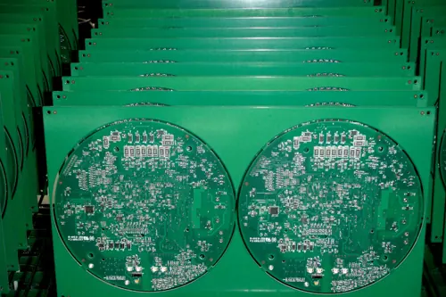
第 1 节 · 第1周第一节
认识PCB：结构与分类
- 本节目标
- 能说出PCB作用、组成（基材、铜箔、阻焊、丝印）与单层、双层、多层板区别
- 课堂流程
- ①讲解PCB结构图解；②每人拆解1块废旧电路板；③按清单观察并标注基材、走线、焊盘、过孔、丝印；④分组汇报观察结论
- 工具材料
- 废旧电路板、放大镜、观察记录单
- 产出 / 考核
- 拆机观察笔记1页
- 课后
- 收集1块废旧板下节课用
课程大纲
每周两节，共 8 周授课加综合项目。下面是每一节的目标、流程、工具和考核方式，报名前可以先看清楚要学什么、要做什么。

第 1 节 · 第1周第一节
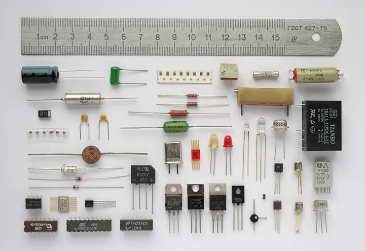
第 2 节 · 第1周第二节
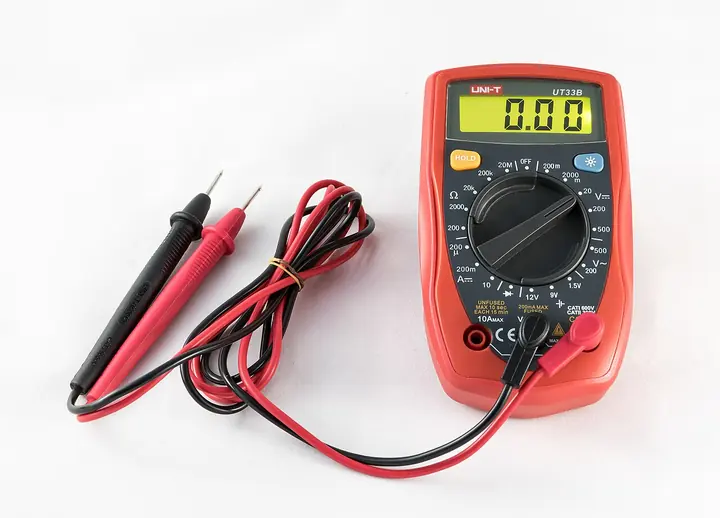
第 3 节 · 第2周第一节
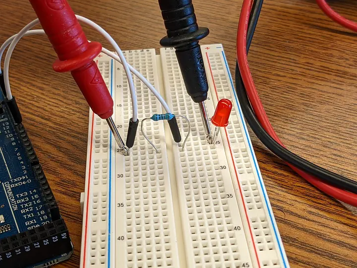
第 4 节 · 第2周第二节
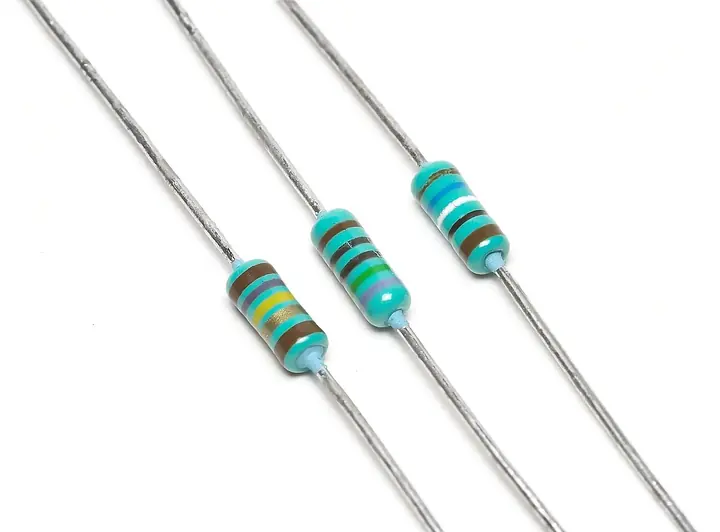
第 5 节 · 第3周第一节
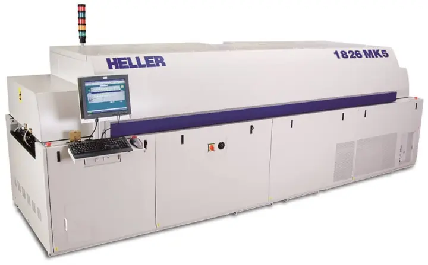
第 6 节 · 第3周第二节
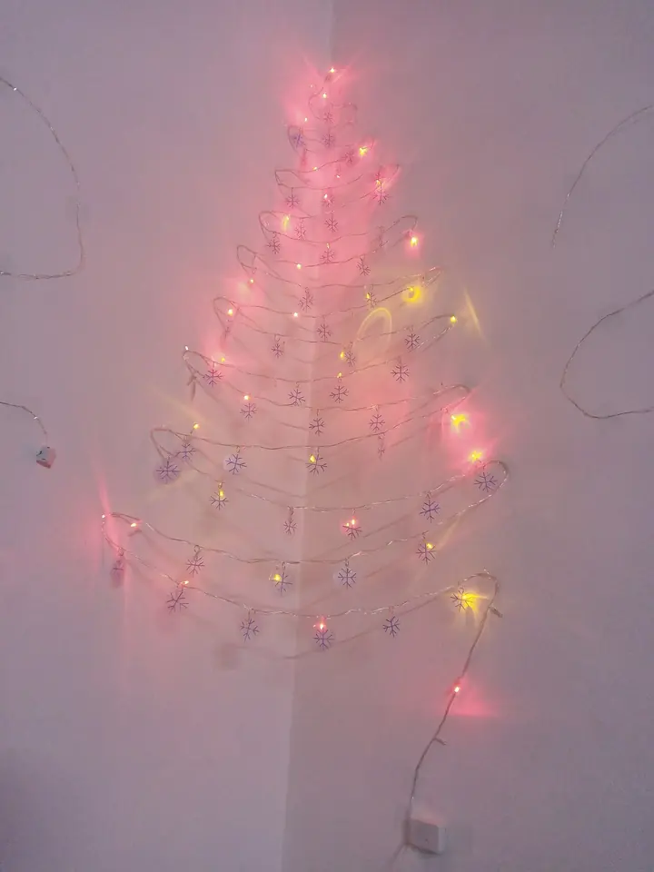
第 7 节 · 第4周第一节

第 8 节 · 第4周第二节
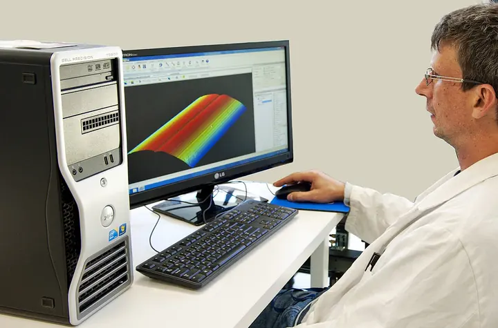
第 9 节 · 第5周第一节
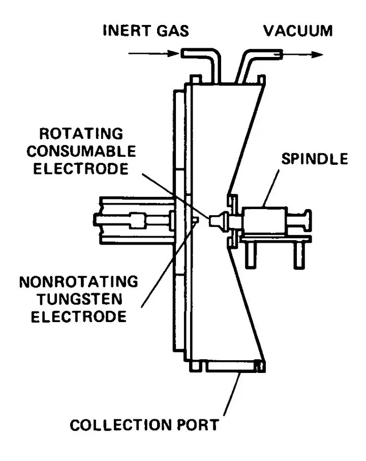
第 10 节 · 第5周第二节
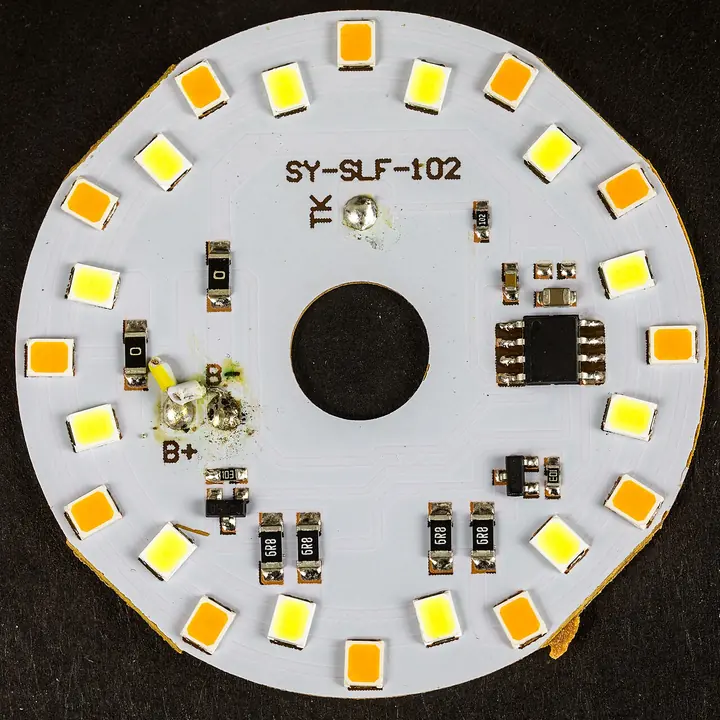
第 11 节 · 第6周第一节
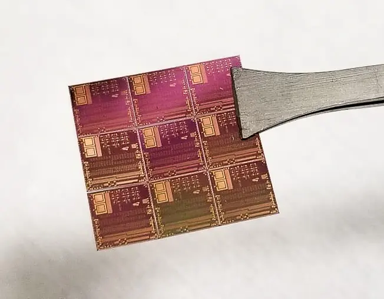
第 12 节 · 第6周第二节
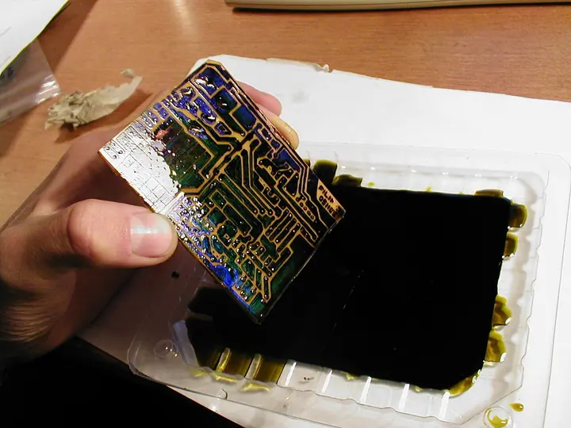
第 13 节 · 第7周第一节
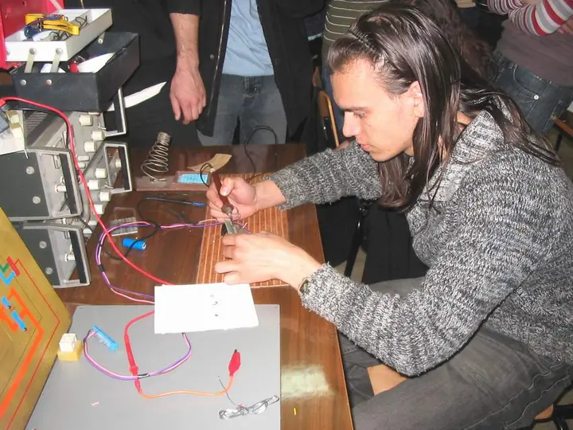
第 14 节 · 第7周第二节
第 15 节 · 第8周第一节
第 16 节 · 第8周第二节